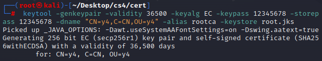
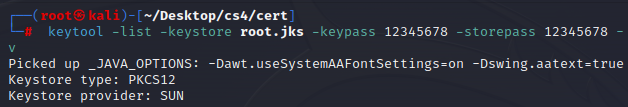
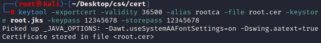
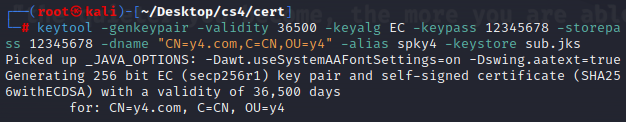
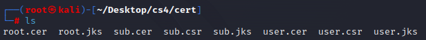

keytool 生成证书链
数字证书基本概念
数字证书是一种由受信任的第三方机构（称为证书颁发机构，CA）颁发的电子文档，用于证明公钥的所有权。数字证书包含了证书持有者的信息（如名称和电子邮件地址）、证书持有者的公钥、证书有效期以及CA的签名等信息。其主要作用包括：
- 身份验证：帮助用户验证对方的身份，确保通信双方是合法的。
- 数据加密：通过公钥和私钥配对，保证数据传输的安全性。
- 数据完整性：通过数字签名确认数据在传输过程中未被篡改。
证书链是一系列数字证书的集合，用于建立一个信任路径，从而验证证书的有效性。证书链从一个受信任的根证书颁发机构（Root CA）开始，经过一个或多个中间证书颁发机构（Intermediate CAs），最终到达目标证书（如服务器或个人证书）。每个中间CA的证书都由上一级CA签名。证书链的工作原理基于信任传递机制，即如果你信任根证书颁发机构，那么你也可以信任它所签发的所有证书，包括中间CA证书和最终的服务器或个人证书。这种机制确保了数字证书体系的安全性和可扩展性。
数字证书和证书链的重要性
- 建立信任关系：通过验证证书链，用户可以确认一个网站的真实性和安全性，防止钓鱼攻击和确保网站身份的真实性。
- 加强数据安全：数字证书链确保了公钥的真实来源，使得数据加密和数字签名过程更加安全可靠。
生成根证书
安装好java，确保keytool可以正常使用，开始配置证书链
keytool -genkeypair -validity 36500 -keyalg EC -keypass 12345678 -storepass 12345678 -dname "CN=y4,C=CN,OU=y4" -alias rootca -keystore root.jks

此命令使用椭圆曲线secp256r1算法，产生一个256位的EC密钥对，并保存到njhx_root.jks中。使用以下命令查看密钥库的信息，会发现发布者与所有者都是y4
keytool -list -keystore root.jks -keypass 12345678 -storepass 12345678 -v

从根证书密钥库导出根证书
使用keytool的导出功能，从密钥库中导出根证书，输入密钥库的密码，导出的证书文件为rootca.cer命令如下：
keytool -exportcert -validity 36500 -alias rootca -file root.cer -keystore root.jks -keypass 12345678 -storepass 12345678

生成二级证书密钥库
二级证书需要由根证书签发。
首先使用keytool生成二级证书的密钥库，但是此时还是自签的，我们需要从中生成一个二级证书请求（其中包含了二级证书的公钥）；
然后将证书请求发送到rootca签发二级证书；
最后，我们将rootca签发的二级证书导入到证书密钥库中，完成二级证书的生成。
下面命令是生成二级证书密钥库，密钥库的名称为spky4，此时仍是自签的，证书颁发者和使用者都是自已：
keytool -genkeypair -validity 36500 -keyalg EC -keypass 12345678 -storepass 12345678 -dname "CN=y4.com,C=CN,OU=y4" -alias spky4 -keystore sub.jks

从二级证书密钥库中生成证书请求
从二级CA密钥库中导出证书请求，下面是导出证书请求的命令，spky4是上面生成的二级CA密钥库的名字，最终导出证书请求文件为spky4.csr：
keytool -certreq -alias spky4 -file sub.csr -keystore sub.jks -keypass 12345678 -storepass 12345678
使用根证书签发证书
通过keytool工具的签发证书功能，使用rootca对二级证书请求（subca.csr）签发一张二级证书。命令如下，alias指定证书的颁发者，infile指定证书请求文件，outfile是二级证书的文件名：
keytool -gencert -validity 36500 -alias rootca -infile sub.csr -outfile sub.cer -keystore root.jks -keypass 12345678 -storepass 12345678
导入二级证书到密钥库中
因为本地生成的密钥库仍然是自签名的，此时需要将根证书签发的二级证书导入密钥库中，导入前，要先将自签名的根证书导入密钥库，这点非常重要，否则会报“无法从回复中建立链”，命令如下：
keytool -importcert -alias rootca -file root.cer -keystore sub.jks -storepass 12345678 -keypass 12345678
使用二级证书签发用户证书
签发用户CA的流程与产生二级CA的过程是一样的。下面我们产生用户user的CA，将生成二级证书操作中的rootca改为二级证书的subca，将alias都变为user。
生成用户证书密钥库
先生成userca 的密钥库，命令如下：
keytool -genkeypair -alias userca -keyalg EC -validity 36500 -keystore user.jks -keypass 12345678 -storepass 12345678 -dname "CN=*.test.y4.com,C=CN,OU=y4"
生成用户证书请求
keytool -certreq -alias userca -file user.csr -keystore user.jks -keypass 12345678 -storepass 12345678
用二级证书签发用户证书
keytool -gencert -alias spky4 -infile user.csr -outfile user.cer -keystore sub.jks -keypass 12345678 -storepass 12345678
导入用户证书到密钥库中
导入用户证书时，还需要将rootca也导入，否则在客户端使用时，会导致校验失败。
keytool -importcert -alias userca -file user.cer -keystore user.jks -storepass 12345678
keytool -importcert -alias rootca -file root.cer -keystore user.jks -storepass 12345678
最终目录下文件如下
